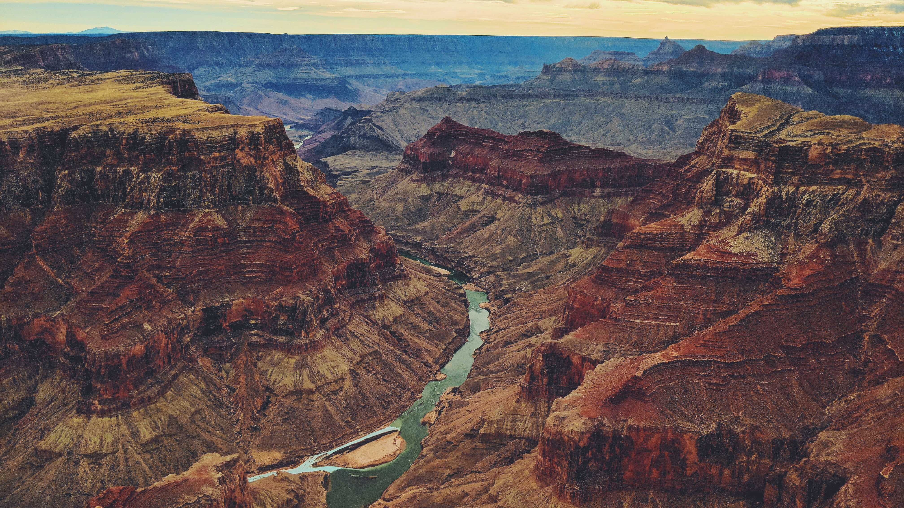
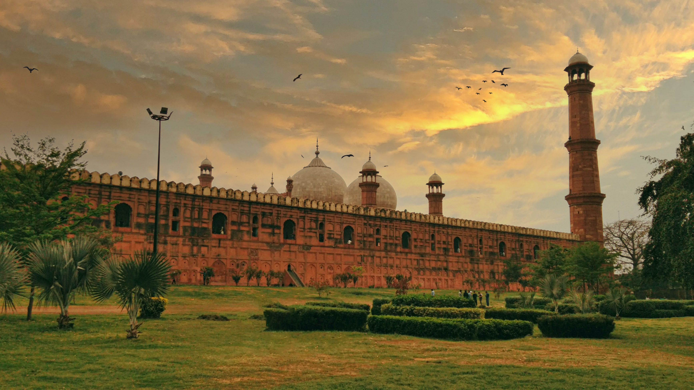

Architecture of Pakistan
yourself in the architectural marvels that tell the tale of Pakistan's rich history and cultural heritage. From the ancient archaeological site of Mohenjo-Daro, showcasing the remnants of one of the world's earliest urban civilizations, to the intricate Mughal-era masterpieces such as the Lahore Fort and Badshahi Mosque, Pakistan boasts a diverse range of architectural gems. Lahore, the cultural capital, is adorned with stunning examples of Indo-Islamic architecture, including the resplendent Shalimar Gardens. The city of Islamabad, with its modern design and iconic Faisal Mosque, offers a glimpse into contemporary architectural achievements. Explore the ornate tombs and mausoleums in Multan, reflecting the region's historical significance. Whether wandering through the winding streets of the Walled City of Lahore or marveling at the grandeur of Karachi's Quaid's Mausoleum, Pakistan's architectural landscape is a testament to its rich cultural tapestry and storied past.
